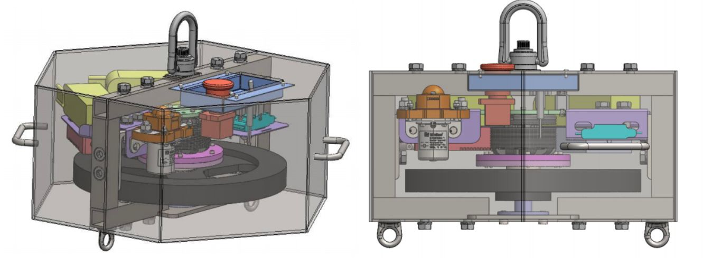
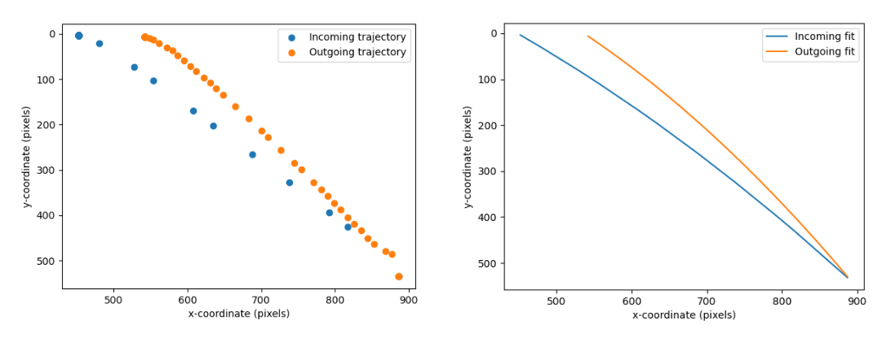
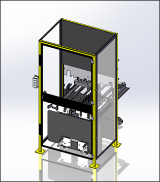
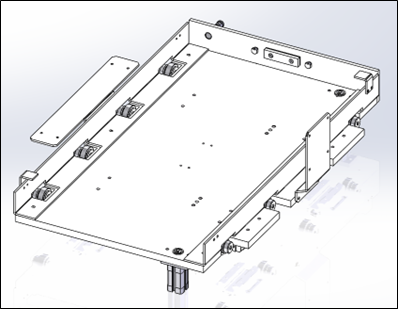

Engineering Portfolio
Cooper Cole
Table of Contents
Table of Contents
Robot Localization using Stereovision
SpinStop
Spikeball Net Model
Steel Billet Exchange Assembly
Robot Cell Part Nest
Autonomous Checkers Robot
Website Development
Relevant Coursework
Robot Localization using Stereovision
Jan 2024 - April 2024
Project Overview:
- Design and build a system to localize a baseball pitching robot relative to home plate
- System required to increase pitch accuracy and improve athlete training
- Test full system integration and validate accuracy
Design Process:
- Research and select appropriate camera hardware
- Design and fabricate localization target
- Develop computer vision software for camera calibration and stereovision measurement
Results and Achievements:
- $10 hand manufacturable, foldable localization target design
- Achieved Z and X measurement accuracy to within 3”
See images below and checkout the full baseball pitching robot localization report for more
System Schematic
Stereovision Measurement Diagram
Figure 5: Localization Target
SpinStop
Aug 2023 - April 2024
Project Overview:
- Team of 4 focused on increasing the safety and efficiency of helicopter rescue operations
- Designed a mechatronics system to stop the uncontrolled spinning of helicopter hoisted payloads
- Personally contributed to wireless data collection and display system, firmware and software controls development, system integration, and outreach for industry partners and grant funding
- Successfully secured over $14k in funding, sponsorships, and industry partnerships
The Problem:
- Environmental factors such as wind and rotor downwash lead to uncontrolled spinning of hoisted payloads during helicopter rescue operations
- Spinning poses injury risks to rescuers and subjects, complicating rescue missions
- Lack of universal solution increases complexity and time of rescue operations
Our Solution:
- Developed an intermediary system connecting rescue payload to helicopter hoist cable
- System detects spinning and applies torque to stop it
- Mechanically adaptable design ensures compatibility with existing helicopter systems and rescue payloads. Can also be extended to the construction industry.
See the images below and checkout https://spinstop.ca/ for more.

SpinStop Device CAD

Isometric view of complete system (Top); Top view (Left); Inside view (Right).
Spikeball Net Model
Oct - Dec 2023
Project Overview:
- Part of a 3-person team to create and validate a simulated physics model of Spikeball ball-net interaction, with a focus on “Pocket Shots”
- Collected experimental data and analyzed mechanics
- Provided recommendations for players to improve pocket shot success
Design Process:
- Used OpenCV for video analysis and trajectory tracking
- Developed simulation in PyBullet to validate experimental results
- Modeled ball-net interaction and performed optimization
Results and Achievements:
- Identified factors influencing pocket shot success, such as shot speed and angle
- Optimized objective functions for fastest horizontal rebound, shortest airtime, and shallowest rebound angle
- Provided practical implications for athletes and suggestions for future improvements in simulation and experimental setup
See the images below, and checkout the full spikeball net model report for more

Tracked Frame and Mask

Incoming and Outgoing Trajectories

PyBullet Model
Steel Billet Exchange Assembly
Feb - Apr 2022
Project Overview:
- Objective: Design a table for pallets of steel billets to interface with an automation robot cell on a manufacturing line
- Requirements: Interface with pre-existing pallet carts and pallets; meet ANSI/ISO safety standards
Design Process:
- Table designed around dimensional constraints of pre-existing pallet carts and part pallets
- Challenge: Precision welding and large-scale machining not available; focused on easily fabricating parts within constraints
- Overcame challenges using datum pins for position repeatability and adding adjustability with slot holes
Results and Achievements:
- Assembly consists of over 50 unique commercial parts and 40 unique custom parts designed in SolidWorks
- Design fabricated with stock dimensioned materials for ease of manufacturing
- Meets ANSI/ISO safety standards for automated manufacturing lines
- Final design successfully achieves project objective and meets outlined constraints and criteria
See images below.

Steel Billet Exchange Assembly
Steel Billet Exchange Assembly Rear View

Pallet Dolly
Automation Cell Model
Automation Cell Front View
Robot Cell Part Nest
Feb 2022
Project Overview:
- Redesigned factory’s standard robot cell part nest using SolidWorks
- Objective: Improve manufacturability, reduce material cost, and cut assembly time by 50%
- Tasks included purchasing necessary sensors, assembling the nest, and programming the robot’s automated manufacturing routine
Design Process:
- Greatest challenge: Simplifying parts for easier manufacturing while maintaining spigot position
- Overcame challenge by consolidating multiple parts into one and utilizing datum pins for positioning
Results and Achievements:
- Successful redesign achieved objectives of improved manufacturability, reduced material cost, and decreased assembly time
Robot Cell Part Reject Nest
Autonomous Checkers Robot
Nov - Dec 2019
Project Overview:
- First-year engineering design course project involving myself and 2 classmates
- Tasked with building a mechatronic system using Tetrix and Lego EV3 Mindstorms
- Designed to play an entire game of checkers against itself
Design Process:
- Constructed and programmed a robot with 3-axis movement system and gripper using Tetrix and Lego Mindstorms
- Controller programmed in C with original checkers algorithm
- Project timeline: 1 month for research, design, construction, and testing
Results and Achievements:
- Successfully addressed challenges with 3-axis movement system precision and repeatability
- Used gears and rack-and-pinion for precise movement
- Implemented software updates to maintain gripper location accuracy
- Integration of buttons on the robot to update gripper location, minimizing error buildup
Check out the demo video.
Autonomous Checkers Robot
Website Development
I have done a bit of web dev for myself and some projects. I am a fan of lightweight websites with simple and clean designs. Check them out below.
https://coopercole.ca/
https://spinstop.ca/
https://engnews.ca/
Relevant Coursework
Studying mechatronics engineering, I get to learn a multidisciplinary blend of topics, from mechanical and electrical design to computer programming and automation technology. Through my courses, I have learned technical skills in CAD, Design, Programming, and more.
Relevant Courses include:
SYDE 522 Foundations of Artificial Intelligence
This course focuses on fundamental concepts of Artificial Intelligence. Covering various learning schemes such as supervised and unsupervised algorithms. Key topics include dimensionality reduction, clustering, classification, deep and shallow artificial neural networks, and reinforcement learning. Additionally, ethical considerations in artificial intelligence are discussed.
ECE 484 Digital Control Applications
Dynamic system modeling: linear, nonlinear, state-space, sample data systems, computer simulation, system identification. Discrete system stability and dynamic performance. Nonlinear system analysis, limit cycles. Digital control system design: emulation methods, z-domain, frequency domain, pole placement. Implementation of digital controllers. Laboratory projects in computer control of mechatronic and other systems.
SYDE 575 Image Processing
Beginning with a discussion of quantitative models of imaging systems, this course moves on to apply methods of linear systems theory and signal processing to image processing. Simple spatial domain techniques as well as spatial frequency domain methods, and digital filter design for image enhancement and restoration are discussed. The key methods and problems are surveyed; edge detection, image denoising, image segmentation, image enhancement, image compression, image registration, and feature detection. Applications to machine vision, remote sensing, and medical imaging will be emphasized.
BME 550 Sports Engineering
This course focuses on the application of engineering principles to the analysis of sports equipment and their effects on athletic performance. Principles of mechanics are used to understand the motion and forces arising in sports equipment, and their interaction with the musculoskeletal dynamics of athletes.
MTE 325 Microprocessor Systems and Interfacing for Mechatronics Engineering
Synchronization and data flow; interfacing to sensors and actuators; microprocessor system architecture, parallel, serial, and analog interfacing; buses; direct memory access (DMA); interfacing considerations.
MTE 360 Automatic Control Systems
Feedback control design and analysis for linear dynamic systems with emphasis on mechanical engineering applications; transient and frequency response; stability; system performance; control modes; state space techniques; Introduction to digital control systems.